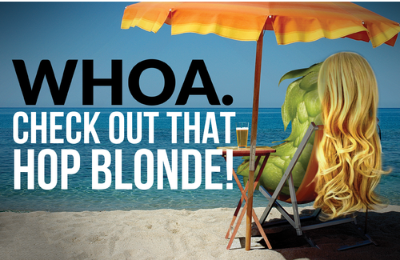
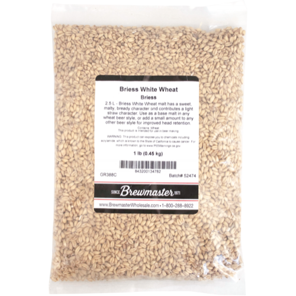
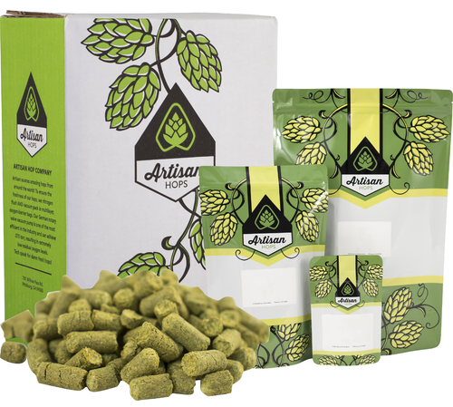
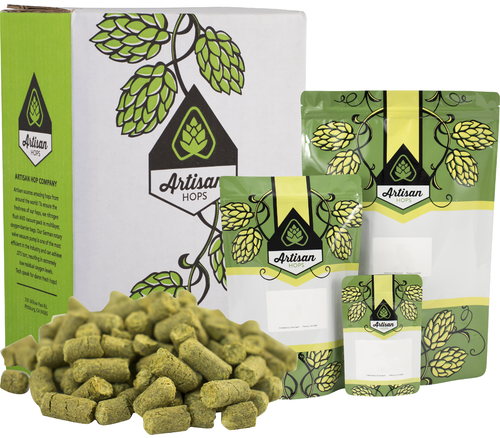

Hop Blonde Ale

Recipe Kit
Ingredients
Water
6 gallons of distilled water
Steeping Grains
1 lb. Crystal 10L

1 lb. White Wheat

Malt Extract
6 lbs. Ultralight Malt Extract (LME)

0.5 lb. Light DME

Hops
1. oz Magnum Bittering Hops (Pellets)

1 oz. Cascade Hops (Pellets)

1 oz. Willamette Hops (Pellets)

1 oz. Simcoe Hops (Pellets)

Clarifier
1 Whirfloc Tablet

Yeast
CellarScience® CALI Dry Yeast

Propper Starter Condensed Wort 16 oz Can